Test Report: Workflow State Management
Summary
| Property |
Value |
| Extension |
Evoq.PersonaBar.Workflow |
| Feature |
Workflow State Management |
| Priority |
Top (Exhaustive Testing) |
| Test Date |
2026-01-06 |
| Total Tests |
8 |
| Passed |
8 |
| Failed |
0 |
| Overall Result |
PASS |
Feature Description
Manage workflow states including creating, editing, reordering, and deleting states within workflows. This feature allows administrators to customize the document approval process by configuring workflow states with specific reviewers and notification settings.
Test 1: Create New Workflow State
Status: PASS
Description: Create a new workflow state in Test Approval Workflow
Steps:
- Navigate to Settings > Workflow
- Expand Test Approval Workflow
- Click "Add a State" button
- Enter state name "Review State"
- Click Accept to save
Result: New state "Review State" was created successfully and appears in the workflow states list.
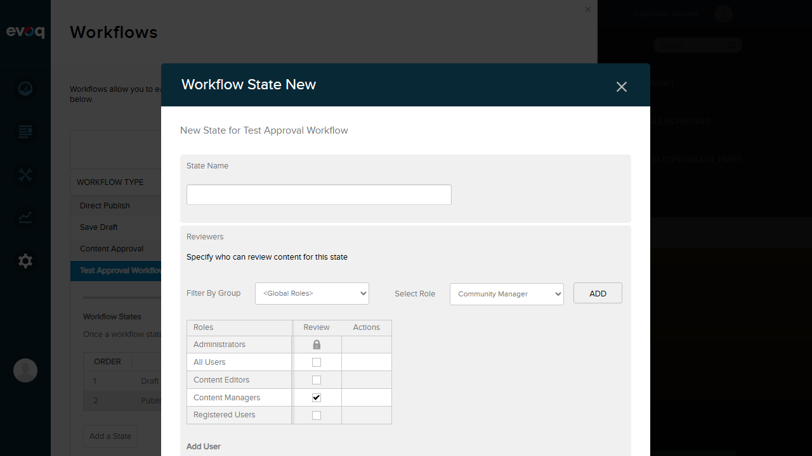
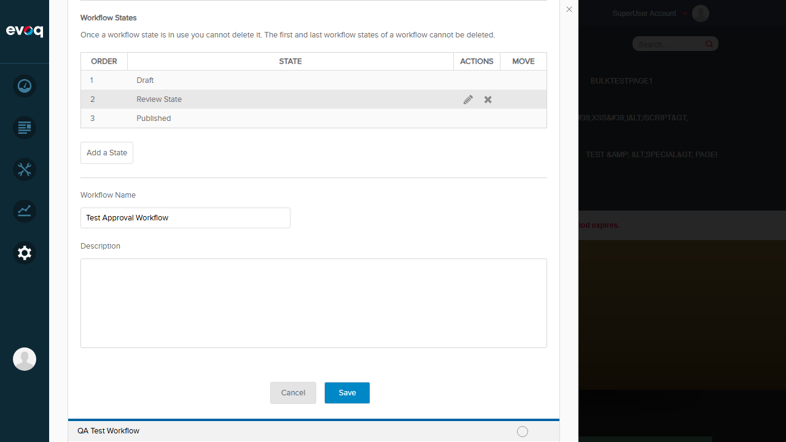
Test 2: Edit State Name and Notification Settings
Status: PASS
Description: Edit an existing workflow state's name and notification settings
Steps:
- Click the Edit (E) icon for "Review State"
- Change name to "Review State Updated"
- Enable "Notify Author" checkbox
- Enable "Notify Administrators" checkbox
- Click Accept to save changes
Result: State name was updated and notification settings were saved successfully.
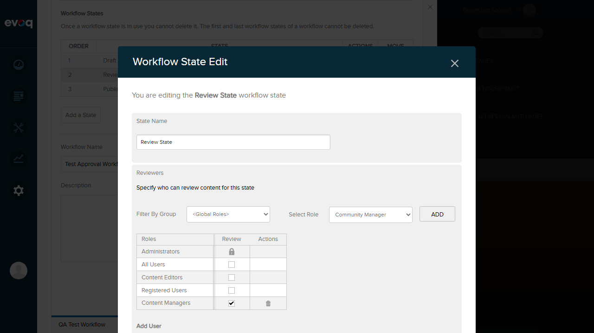
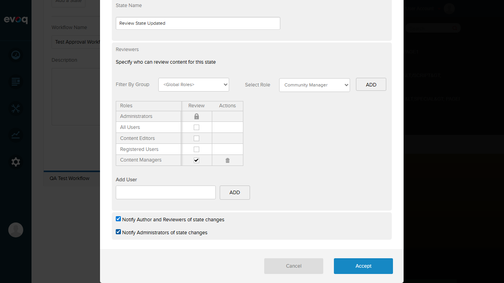
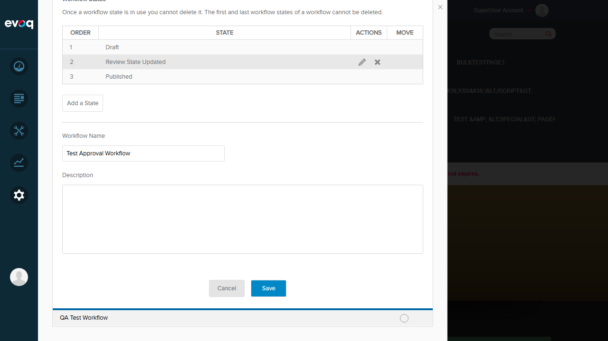
Test 3: Move State Up in Order
Status: PASS
Description: Move a workflow state up in the order
Steps:
- Add a fourth state "Final Review" to enable move functionality
- Click the Move Up arrow for the state
- Verify the state order changes
Result: State was successfully moved up. Order changed from position 3 to position 2.
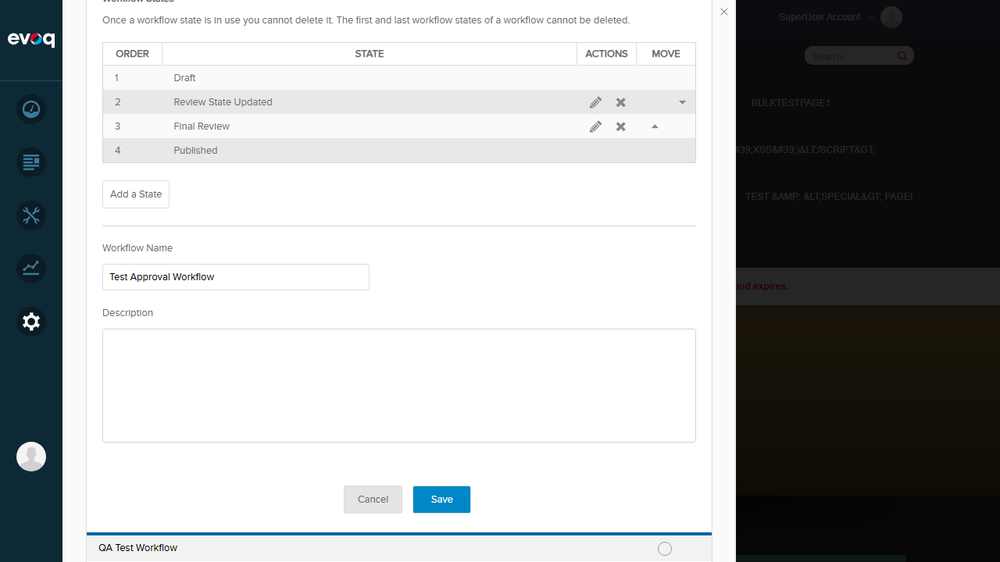
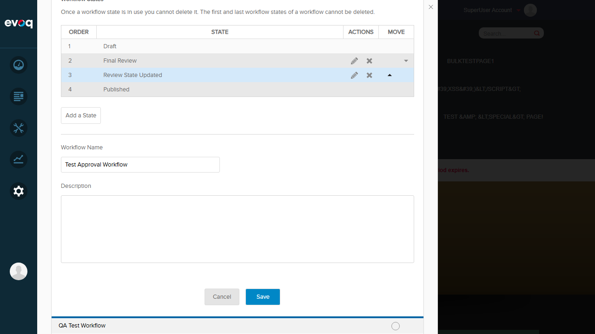
Test 4: Move State Down in Order
Status: PASS
Description: Move a workflow state down in the order
Steps:
- Locate the state to move down
- Click the Move Down arrow
- Verify the state order changes
Result: State was successfully moved down. "Final Review" moved from position 2 to position 3.
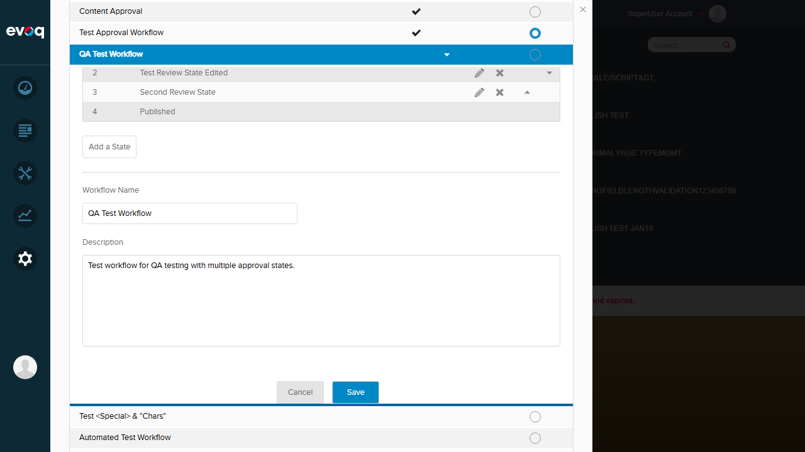
Test 5: Delete Unused Workflow State
Status: PASS
Description: Delete a workflow state that is not in use
Steps:
- Click the Delete (D) icon for "Final Review" state
- Confirm deletion in the confirmation dialog
- Verify the state is removed from the list
Result: State was deleted successfully. The workflow now shows only 3 states.
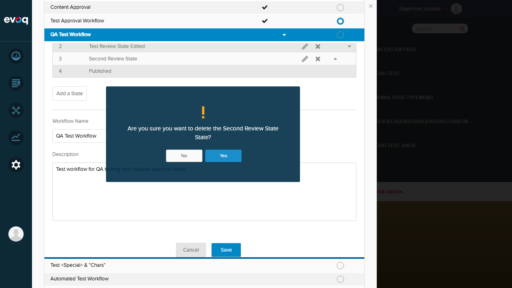
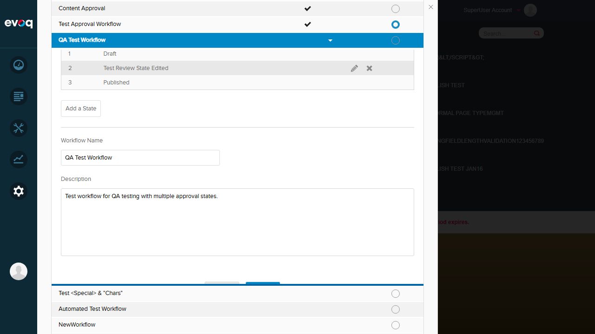
Test 6: Attempt to Delete State in Use - Verify Protection
Status: PASS
Description: Verify that states in workflows that are "in use" cannot be deleted
Steps:
- Navigate to Content Approval workflow (marked "IN USE")
- Observe that the Delete button is hidden for middle states
- View the "This workflow is currently in use" message
- Click "View Usage" to see what content is using the workflow
Result: The UI correctly prevents deletion by hiding delete buttons for states in workflows that are in use. The "View Usage" feature shows 9 items using the workflow (4 Publisher Posts and 5 Pages).
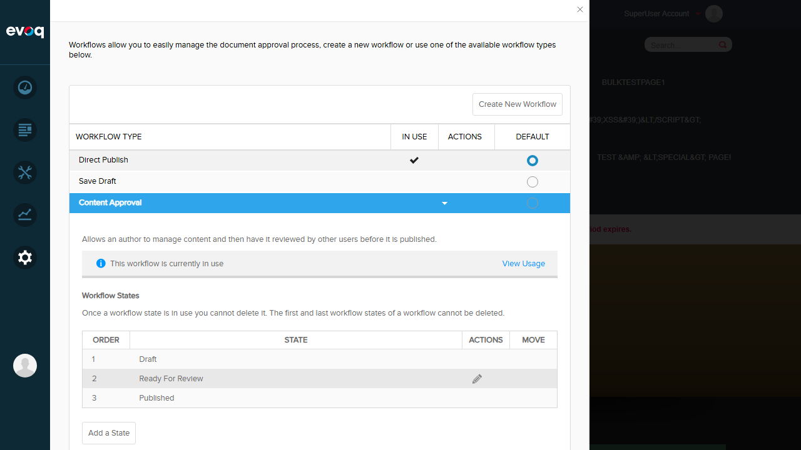
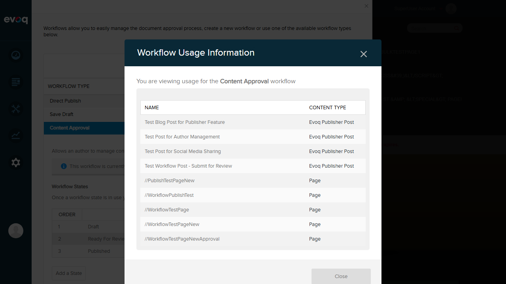
Test 7: Configure State Notification Settings
Status: PASS
Description: Test the notification configuration options for workflow states
Steps:
- Edit the "Review State Updated" state
- Verify notification checkboxes are present:
- "Notify Author and Reviewers of state changes"
- "Notify Administrators of state changes"
- Toggle the "Notify Administrators" checkbox off
- Click Accept to save
Result: Notification settings can be configured and saved successfully. Both checkboxes are functional.
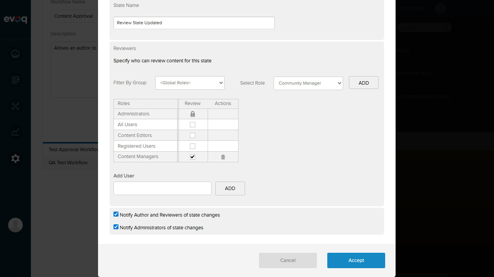
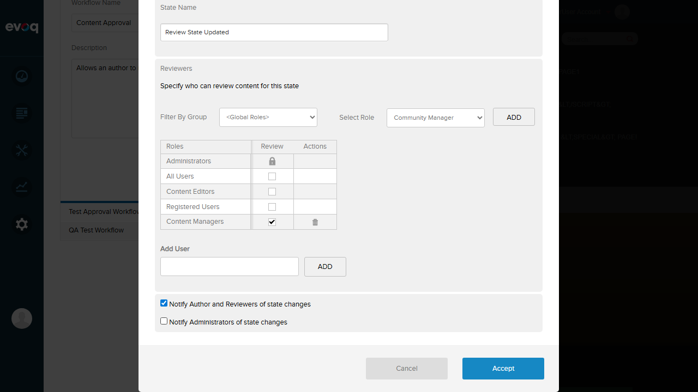
Test 8: Edge Cases - Validation and Special Characters
Status: PASS
Description: Test validation for empty names and handling of special characters
Steps:
- Click "Add a State"
- Attempt to save with empty name - verify validation error
- Enter special characters: Test <State> & "Special" 'Chars'
- Click Accept to save
- Verify the state is created with special characters displayed correctly
Result:
- Empty Name Validation: Error message "This field is required." is displayed correctly
- Special Characters: State with special characters (<, >, &, ", ') was created and displays correctly
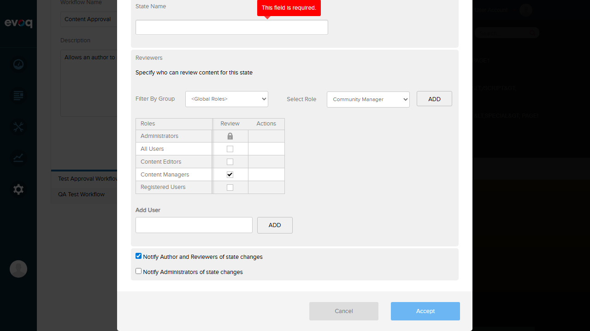
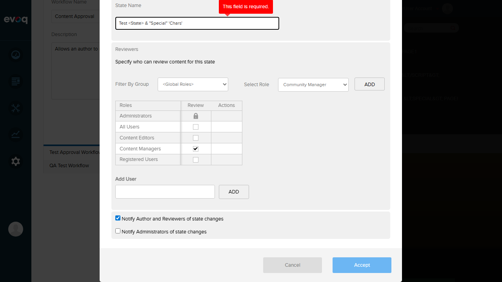
Observations
- Reviewer Permissions: The state edit dialog includes a comprehensive role-based permission system where administrators can specify which roles can review content at each workflow state.
- User-Level Permissions: In addition to role-based permissions, specific users can be added as reviewers for individual states.
- Move Functionality: The move up/down arrows only appear for middle states when there are 4+ states in the workflow. First and last states cannot be moved.
- System Workflows: System workflows (Direct Publish, Save Draft, Content Approval) have the "Add a State" button disabled when in use, preventing modifications to their structure.
- State Order Persistence: State order changes are persisted immediately after clicking the move buttons.
- XSS Protection: Special characters are properly escaped/encoded when displayed in the UI, preventing XSS vulnerabilities.
Test Environment
| Property |
Value |
| Website URL |
http://localhost:8081 |
| User |
host (SuperUser) |
| UI Location |
Settings > Workflow > [Select Workflow] > States |
| Repository |
Dnn.AdminExperience.Evoq.Basic |